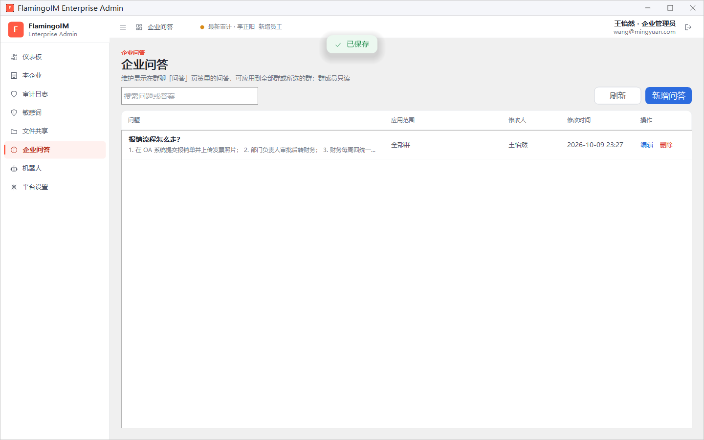
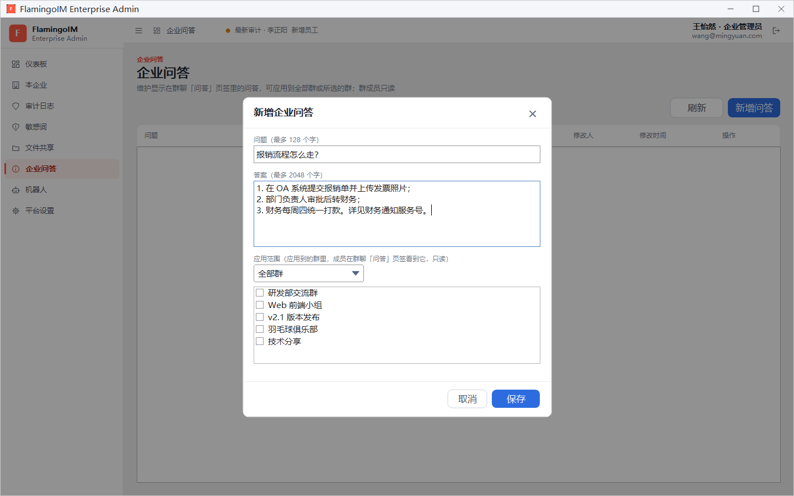

企业问答
员工经常在群里问的问题，例如「报销流程怎么走」「VPN 连不上怎么办」，可以由管理员统一写成企业问答，显示在群聊的「问答」页签里，让员工随时自己查阅。本章介绍如何新增、修改和删除企业问答。
- 适用：企业管理员
- 位置：左侧导航「企业问答」
企业问答显示在哪里
企业问答会出现在所应用的群的群聊窗右侧 问答 页签里，带有「企业问答」标记。群成员只能查看，不能修改或删除；群主和群管理员可以另外维护本群自己的问答。员工一侧的使用方法见客户端「群聊」。
企业问答还可以被机器人使用：企业机器人的规则选择「用问答作答」时，会从问答里找答案回复群成员，见「企业机器人」。
问答列表
点左侧导航的 企业问答，页面列出本企业的全部问答：

- 搜索问题或答案 框可以按关键字查找问答；刷新 重新读取列表。
- 列表各列依次是 问题（下方显示答案的开头）、应用范围（如「全部群」）、修改人、修改时间 和 操作。
新增问答
点右上角的 新增问答，打开「新增企业问答」对话框：

- 在 问题 中填写问题，最多 128 个字，例如「报销流程怎么走？」。
- 在 答案 中填写答案，最多 2048 个字，可以分多行写。答案里可以写网址，群成员点击后用浏览器打开。
- 选择 应用范围：选 全部群 时本企业所有群都能看到；选 所选的群 时，在下方的群列表中勾选要显示它的群。
- 点 保存，页面提示「已保存」。
修改与删除问答
点某一行的 编辑，会打开同样的「编辑企业问答」对话框，修改后点 保存。点 删除 并在确认框中确认后，应用到的群里将不再显示这条问答。
写好问答的小建议问题尽量用员工的口吻来写，答案按步骤分行列出，涉及的系统可以直接附上网址；规定变化后记得及时修改，列表中的修改人和修改时间可以帮你判断哪些问答需要复查。